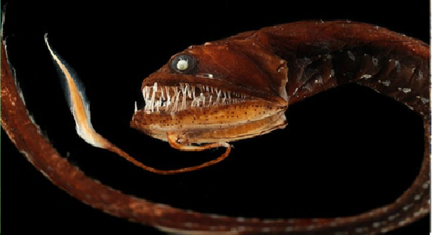

СЕМЕЙСТВА Драконовые (Trachinidae)
ГЛУБИНА:от 500 до 2000 метров и более
КОГДА ОТКРЫЛИ: в сентябре 2024 года
ТИП ПИТАНИЯ:это типичный хищник, питающийся преимущественно живыми организмами у поверхности воды
ведущий одиночный, скрытный образ жизни. Он поджидает добычу (рыб, ракообразных), зарываясь в песок или ил. Для человека представляет угрозу, если на него наступить: рыба защищается, впрыскивая яд через шипы, что вызывает сильную боль и отек. Не атакует людей первым.
Ключевые особенности поведения:
Скрытность: Большую часть времени проводит в засаде, зарывшись в грунт.
Одиночка: Предпочитает уединенный образ жизни, хотя мелкие виды могут держаться группами.
Ядовитость: Использование яда — средство самообороны, а не охоты.
Прибрежное обитание: Предпочитает песчаное или илистое дно.

наверх